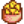
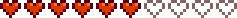

“Los animales son muy inocentes, muy dulces. Y si no los cuidas, ¿Quién lo hará? Solo espero que mis gallinas no se molesten mucho cuando tome sus huevos.”
Marnie tiene su propio negocio en el rancho desde las 9:00 AM hasta las 4:00 PM todos los días, excepto los lunes y martes (pero el rancho sigue abierto esos días). Ella vende animales y suplementos para ellos.
Lewis y Marnie tienen una relación muy cercana. A pesar de ello, Marnie indica que está soltera durante la Danza floral. Durante una misión, se levanta la suspicacia de que los dos puedan tener "algo". Lewis visita a Marnie para atender sus "necesidades" en su negocio y pueden ser encontrados tomando juntos en el Salón Fruta Estelar durante la noche. Incluso puedes encontrar las bermudas de Lewis en la habitación de ella y eso es suficiente para confirmar algo.
Puedes darle a Marnie hasta dos regalos por semana (Más uno en su cumpleaños), que puede aumentar o disminuir su amistad contigo. Los regalos para su cumpleaños ( 18 Otoño) tendrán un efecto amplificado por 8; y mostrará un diálogo único.
Para los regalos amados o gustados, Marnie dirá
“
“¿Un regalo de cumpleaños? ¡Qué detalle! Me encanta.”
“
“¡Te has acordado de mi cumpleaños! Gracias. Es genial.”
Maravillas naturales: explorando nuestro exhuberante mundo
Misterium
Wumbus
Desagrada
n/d
Le Encanta
Sandwich de helado Sorbete de fruta estelar
Desagrada
Cacahuetes salados Joja Cola Maíz de Joja  Nachos Palomitas sabor a trufa Patatas fritas Regaliz negro
Le Gusta
Todo lo demas
Evento de Corazón
Cualquier momento
Puedes recibir un regalo en tu buzón de correo por parte de Marnie en cualquier nivel de amistad que sea mayor a cero puntos de amistad. Las probabilidades de recibir un regalo aumentan al mismo tiempo que tu amistad aumente con Marnie.
Marnie te saluda cuando sales de tu casa de campo. Ella te dirá que está entrenando a sus cabras a decir "hola" pero que ellos no cooperan a no ser que de que tenga su comida favorita, Zanahoria cavernaria. Marnie te pedirá que le lleves una a su rancho entre las 9AM y 5PM. Si tú entras al Rancho de Marnie durante esas horas (hora de apertura pueden contradecir esto) con una Zanahoria cavernaria en tu inventario, una escena ocurrirá contigo dando a Marnie la zanahoria. Esta escena se activará a pesar de que ella esté o no en casa.
Tres Corazones II
Después de alcanzar 3 corazones, Marnie te enviará una receta por correo.
Cuando no estoy cuidando de los animales me gusta experimentar en la cocina. Ahora que nos llevamos mejor, quiero compartir unas recetas contigo. ¡Espero que te guste esta!
-Marnie
Seis Corazones

En un día soleado, entra al pueblo entre las 7PM y 11PM.
Nota: Solo ocurre si Lewis también tiene 6 corazones.
Detalles
Detalles
Después de entrar al Pueblo Pelícano después de las 7PM, aparecerás detrás de la casa de Lewis. Él y Marnie están hablando junto al río acerca de hacer su romance público. Lewis dice que eso hundiría su autoridad, mientras que Marnie dice que él está muy preocupado por su trabajo. Al final, Marnie dice mantendrá su relación en secreto. Después, tú aparecerás y asustarás a Lewis y Marnie. Lewis te pregunta si escuchaste algo, y se te presenta una opción. Si eliges guardar el secreto, Lewis te agradecerá. Si eliges que se lo dirás a todo el pueblo, Lewis se pondrá a llorar. Después, Marnie te pregunta porque estuviste detrás de la casa, y tú saldrás corriendo, dejando a los 2 solos y confundidos.
La relación con Marnie y Lewis no se verá afectada si eliges guardar el secreto o decírselo a todos.
Siete Corazones
Después de 7 corazones, Marnie te enviará una receta por correo.
Cuando no estoy cuidando de los animales me gusta experimentar en la cocina. Ahora que nos llevamos mejor, quiero compartir unas recetas contigo. ¡Espero que te guste esta!
-Marnie
Citas
Regular
Primer encuentro
“
“Me encantan los animales, [Sr./Sra.] [Jugador]. ¡Si tratas bien a los tuyos seguro que seremos buenos amigos!”
Regular
“
“Los animales son muy inocentes, muy dulces. Y si no los cuidas, ¿Quién lo hará? Solo espero que mis gallinas no se molesten mucho cuando tome sus huevos”
“
“Ya llevas un tiempo aquí, ¿cómo va tu granja? ¡Cuidar a los animales es fácil siempre y cuando no te olvides de ellos!”
“
“Mi sobrino Shane se ha estado quedando en mi casa los últimos meses. Me ayuda con las gallinas, así que no me quejo.”
“
“Puedes usar una guadaña para cortar pasto. ¡O puedes comprármelo a mí, por supuesto! Me vendría bien el dinero... Adiós.”
“
“Hola. ¿Necesitar algo? Es posible que en el futuro obtenga algunos tipos diferentes de animales. Aunque tendré que asegurarme de que haya un mercado para ellos, por lo que primero tendrás que demostrar tu habilidad con los animales. Sigue tratando a tus animales con respeto y sucederán cosas buenas.”
“
“Puedes encontrarme en el Salón casi todas las noches. Los animales hacen mucha compañía, pero también necesito pasar tiempo con personas.”
“
“Creo que a alguien en la ciudad le he cogido cariño. *jijiji*”
“
“Me sentiría muy sola si Shane alguna vez se mudara.”
“
“¿Has estado en esa extraña torre al oeste de mi casa? Una vez escuché un ruido terrible y de otro mundo que venía de allí. Yo en tu lugar evitaría ese lugar...”
“
“¡Hola, qué bueno verte! No dudes en visitarme cuando lo desee.”
Días lluviosos
“
“Hola [Jugador]. Parece que estás empapado... ¡pobrecito!”
+6 corazones
“
“Me pregunto si el Sr. Lewis se siente solo en su gran casa... Parece tan vacía allí, ¿no?”
+8 corazones
“
“¡Hola [jugador]! Me alegro de que nos hayamos hecho amigos. Sé que puedo confiar en ti para cuidar de mis queridos animales.”
En el salón
“
“Ahora que estoy aquí por fin puedo relajarme y socializar un poco.”
“
“No hay mucha gente aquí hoy...”
“
“Hoy se me cayó un cubo entero de leche al suelo, fue horrible. Y qué desperdicio del arduo trabajo de mi pobre Belinda.”
“
“¡Es muy amable de tu parte aparecer! Es un poco más animado ahora.”
“
“¡Es muy amable de tu parte aparecer! Es un poco más animado ahora.”
“
“*suspiro*... Hoy no fue muy productivo.”
“
“Siempre veo a Clint aquí pero no habla con nadie. Sólo mira por encima del hombro de vez en cuando.”
“
“(Marnie no parece darse cuenta de que estás allí...)”
La cocina de Marnie
Si vas a examinar el cubo de basura de Marnie mientras ella está en la misma habitación, ella te preguntará.
“
“¿Por qué estás mirando en mi cubo de basura?”
(Marnie no mostrará este mensaje cuando mires a través de su cubo de basura al lado del gallinero o la puerta que Jas te muestra en el evento de 8 corazones de Shane.)
En la isla Jengibre
“
“Jeje... por fin tengo la oportunidad de mostrar todo mi arduo trabajo en el club de aeróbic.”
“
“Je, ji... Es interesante ver a todos en traje de baño.”
“
“Ew... la silla está mojada.”
“
“Uf... ¡Hace calor!”
“
“Me siento cálida.”
Visita al doctor
“
“Erm... ¿Doctor Harvey? Esto es completamente confidencial, ¿Verdad?”
“Bienvenidos al Festival del Huevo... Gracias a mi maravillosa nidada de gallinas por hacerlo posible.”
Año par
“
“Las gallinas ponen los huevos, pero también los gallos juegan un papel importante... ¡Protegen a las gallinas y evitan que se peleen entre sí! Eso significa gallinas más felices y mejores huevos...”
“Hice lo mejor que pude, pero mi exposición es bastante floja en comparación con la de Pierre. Bueno, tal vez los jueces me den puntos extra por la rueda de queso gigante.”
Al elegir "suministros" hay un 0,01% de probabilidad de que el texto debajo del retrato de Marnie diga "*suspiro*... Cuando se abrió la puerta pensé que podría ser Lewis."; o al entrar a la casa ella diga “Lew… Oh.” o “¿Trajiste el aceite de trufa?”.
Si el jugador inspecciona la cómoda en la habitación de Marnie, aparece un cuadro de texto que dice "hay un par de tirantes marrones".
Historial
1.4: Se corrigió el error donde todas las recetas se enviarían por correo con 3 corazones.
1.6: Se agregaron reacciones de regalo personalizadas. Se agregaron retratos de invierno y un nuevo retrato de playa. Cuando se ingresa a la casa de Marnie, puede darte una bienvenida personalizada.